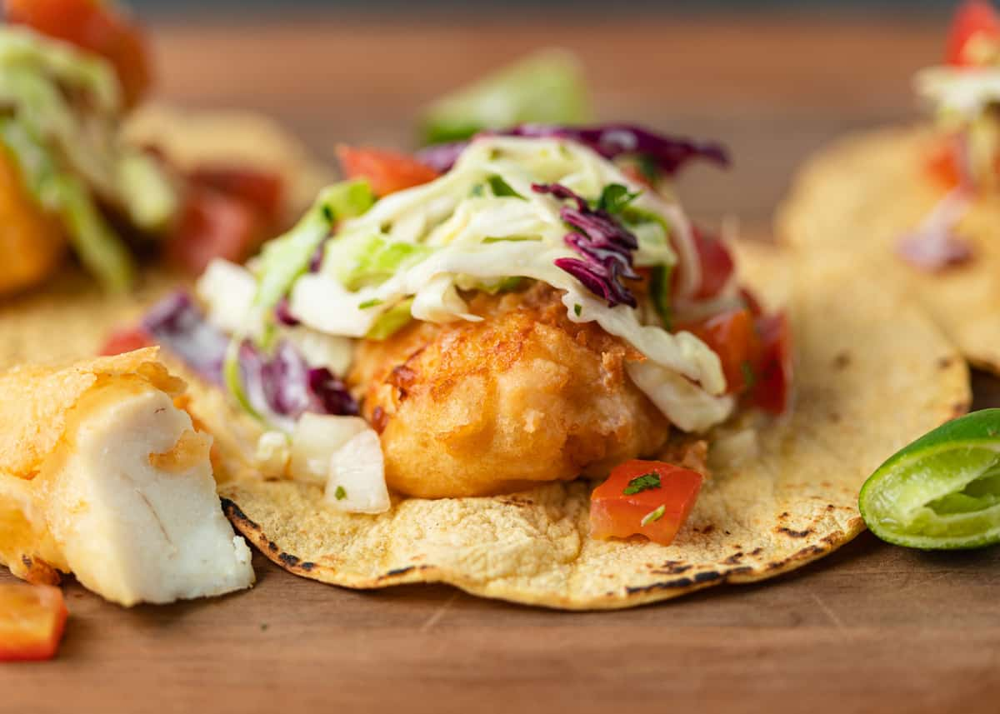

FishTacos

Baja Califronia Fish Tacos
There are three important components to making great fish tacos: white fish, shredded cabbage, and crema (a white sauce).
Ingredients
- 24 small white corn tortillas
- 1 1/2 lb tilapia
- 1/2 tsp ground cumin
- 1/2 tsp cayenne pepper
- 1 tsp salt
- 1/4 tsp black pepper
- 1 Tbsp Olive oil
- 1 Tbsp unsalted butter
- 1/2 small purple cabbage
- 2 medium avocado, sliced
- 2 roma tomatoes, diced (optional)
- 1/2 diced red onion
- 1/2 bunch Cilantro, longer stems removed
- 4 oz 1 cup Cotija cheese, grated
- 1 lime cut into 8 wedges to serve
- 1/2 cup sour cream
- 1/3 cup Mayo
- 2 Tbsp lime juice, from 1 medium lime
- 1 tsp garlic powder
- 1 tsp Sriracha sauce, or to taste
Steps
- Line large baking sheet with parchment or silicone liner. In a small dish, combine seasonings: 1/2 tsp cumin, 1/2 tsp cayenne pepper, 1 tsp salt and 1/4 tsp black pepper and evenly sprinkle seasoning mix over both sides of tilapia.
- Lightly drizzle fish with olive oil and dot each piece with butter. Bake at 375 for 20-25 min. To brown edges, broil for 3-5 minutes at the end if desired.
- Combine all Taco sauce ingredients in a medium bowl and whisk until well blended.
- To serve the tacos, toast quickly toast the corn tortillas on a large dry skillet or griddle over medium/high heat.
- To assemble: start with pieces of fish then add remaining ingredients finishing with a generous sprinkle of cotija cheese and finally that awesome taco sauce! Serve with a fresh lime wedge to squeeze over tacos.
Homepage